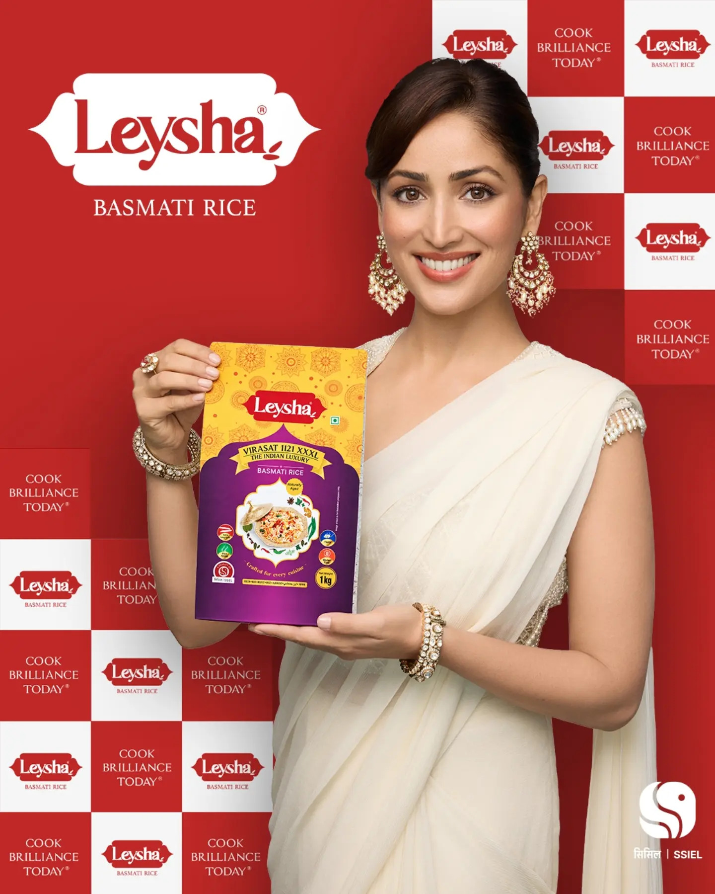
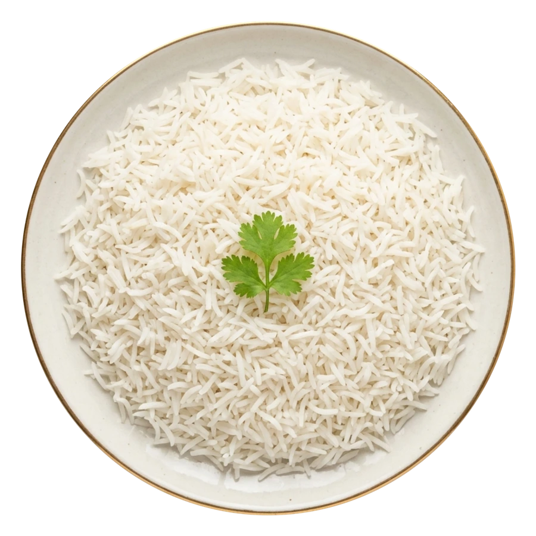

That classic Basmati fragrance that fills your kitchen the moment the pot starts boiling.
We test every batch by actually cooking it—checking the natural smell, taste, and softness before it ever gets packed for your home.
Grown with care in the foothills.
Cooked with pride at home.
Grown in the Himalayan foothills and aged with care. Long, fragrant grains that cook fluffy and separate every time.
Our storyLeysha comes from Shiv Shakti Inter Globe Exports (SSIEL). We started with a small rice mill in 1967 with one simple goal: to bring clean, honest, high-quality rice to every home.
More than fifty years later, that same care goes into every pack of Leysha Basmati—so your everyday meals, pulaos, and biryanis turn out right every single time.
Started with a small
local rice mill.
Expanded into
Shiv Shakti Rice Mill.
Founded SSIEL to share
our rice worldwide.
Picked from the finest
Basmati harvests.

Famous for stretching to twice its length when cooked, making every biryani look and taste special.
Handled gently so every
grain stays whole.
Rested for up to 24 months so the rice never turns sticky and fills your kitchen with classic Basmati aroma.
Light, soft, and delicious
in every bite.
Milled with over 50 years of experience so the grains stay separate, tender, and easy to cook.
From daily steamed rice to weekend biryanis,
we have a Basmati made for every recipe.

That classic Basmati fragrance that fills your kitchen the moment the pot starts boiling.
We test every batch by actually cooking it—checking the natural smell, taste, and softness before it ever gets packed for your home.
Slender grains that stretch to nearly double their size and stay separate on the plate.
We measure the grains both raw and cooked to make sure they grow long and fluffy in your pot without clumping or turning mushy.
Whether you want soft steamed rice, firm biryani grains, or creamy kheer, there’s a match for your recipe.
A rich dum biryani needs a firm grain that holds its shape, while everyday dal-chawal tastes best with soft steamed rice. Our range makes it easy to pick the right one.
No more guessing water or cooking times. Pick a dish, choose how many people you’re serving, and follow these simple steps.
Every stove and pot is a little different—adjust the water or heat slightly based on how soft you like your rice.
Take a look inside our mills and quality labs to see how we select, clean, age, and test every batch of Leysha Basmati.